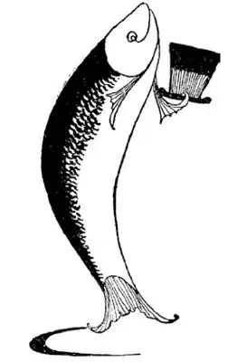
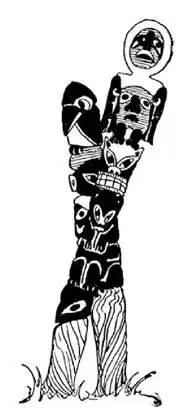

16
The ‘Est,’ Est West (continued
)
“之最”最多的西部（续）

HERE is a riddle for you. What is it that has no legs and yet can jump as high as the Washington Monument? I’ll tell you the answer in a minute.
Between Oregon and Washington is a river named Columbia, after Columbus. In the Columbia River are large fish called salmon. Salmon live in the salt ocean, but when Mrs. Salmon wants to lay her eggs she goes way up the Columbia River, far above the falls to fresh water, looking for a quiet place to do so. How can she get by the falls? She jumps the falls. You may wonder how fish without legs can jump at all, and it is peculiar that they can, but they do. They bend their tails into a kind of spring, then flip!—up they go; for a salmon can jump as high as the Washington Monument.

What is it that can jump as high as the
Washington Monument?
什么东西能跳得和华盛顿纪念碑一样高？
“Are the falls as high as the Washington Monument?”
“No, they are all low.”
“But you said a salmon could jump as high as the Washington Monument.”
“A salmon can , for the Washington Monument can’t jump at all!”
Millions of salmon together called “schools” swim up the river and fishermen catch them in nets, but they leave most of them so that they can lay eggs from which little salmon are born, and the little salmon swim down the river and out into the ocean, where they live and grow up until it comes time for them also to lay eggs, and then they in their turn swim up the river, jump up the falls, and are either caught or left to raise more families of little salmon. Salmon meat is pink; we call it salmon color. It is packed in cans. You have probably eaten salmon from the Columbia River yourself.
The oldest fruit in the World is the apple. It is the fruit that grew in the Garden of Eden, but people believe the apple that Eve gave Adam was a very poor one compared to the apples that grow in the State of Washington. People in Washington, D. C.—all the way across the country—buy apples that have been shipped from Washington State—3,000 miles away—for they are so much better than ordinary apples. They are “skookum.” That’s what the Indians of the Northwest call something very nice—whether it is a girl or an apple.
There are great forests in Washington and Oregon. The forest trees are cut down to make lumber for building houses; and the paper I am writing on was made from trees that grew in Oregon. How do I know that? When I hold the paper up to the light, there is printed in white—we call it a watermark—the word “Oregon.”
At the northwest corner of America is a large country that belongs to the United States and yet it is not a State. It is called a Territory. It is Alaska. The highest mountain in North America is there. It is called Mount McKinley. Alaska is so cold, so far off, and so hard to get to, and yet the United States bought it and paid millions of dollars for it, not because it had the highest mountain, but chiefly because of the fish in its waters and the fur on its animals, and then one day gold was discovered there.
“Skookum”
“呱呱叫”
Gold is a magic word. Again, as in the days of the Forty-niners, thousands of people, when they heard of the gold, left everything and, with nothing but shovels to dig the gold and sieves to strain it out of the water, started off to that far-away place, hoping to make their fortunes before the new year. Many foolishly went off with nothing to live on after they reached Alaska. They didn’t seem to know that where the gold was to be found there was no food, nothing to eat, and no stores where one could buy food. Others, more wise, carried cans of food with them, and when the foolish gold-diggers had found gold, the wise ones sold them food for their gold. For a can of beans they often asked hundreds of times what it had cost, and the foolish gold-diggers had to pay it or starve, for they couldn’t eat gold and they had to eat or die. So the wise ones came back with the gold which the foolish ones had dug, and the foolish ones were lucky to get back at all.
In the parts of Alaska where fish can be caught for food, Indians live in small villages. In the center of each village they put up a tall pole carved and painted in the forms of birds and animals with big ugly faces. These are called Totem Poles. Each tribe or family has some bird or animal such as an eagle or a bear for its mascot, as you might call your club “the Lions” or “the Owls,” and the Totem Pole is the tribe’s sign.
If you should suddenly see at night the whole northern sky hung with curtains of fire and ablaze with flashing flames shooting from the ground far up into the heavens, you might think, as I did the first time I saw it when a boy, that the World was coming to an end. It looked as if the World were on fire and were about to explode. This amazing sight is called the Aurora Borealis or Northern Light, and it may be seen often in Alaska and sometimes, though perhaps only once or twice in a lifetime, much farther south. It is a terrifying sight to those who have never seen or even heard of such a thing before, and yet the Aurora Borealis does no more harm than a beautiful sunset or a rainbow in the sky.

Totem Poles
图腾柱
What causes the Aurora Borealis? That’s a hard question to answer. Electricity has something to do with it and so have sun spots. Have you ever heard of sun spots? Sometimes a dark spot will appear on the sun and move slowly across it. You can’t see sun spots because the sun is much too bright to be stared at. But men who look through telescopes with darkened glass to protect their eyes can see these spots and they can photograph them with special cameras. After a sun spot appears on the sun there is usually a very bright Aurora Borealis.
That’s all I can tell you. A little girl once asked, “What is a thought made of?” That’s a hard question to answer too.
【中文阅读】
有个谜语给你猜：什么东西没有腿却能跳得和华盛顿纪念碑一样高？我一会儿就告诉你答案。
在俄勒冈州和华盛顿州之间有一条以哥伦布的名字命名的河，叫做哥伦比亚河。哥伦比亚河里有一种很大的鱼，叫做鲑鱼。鲑鱼生活在海洋的咸水里，但是当鲑鱼夫人要产卵的时候，她会沿哥伦比亚河往上游，到远远高于瀑布的淡水里，找一个安静的地方去产卵。她怎么才能通过瀑布呢？她跳过瀑布。你也许很纳闷鱼没有腿怎么会跳呢，鲑鱼能跳起来真是太奇怪了，但它们就是能。鲑鱼把尾巴弯成像弹簧的样子，然后猛然翻转——就跳上去了；因为鲑鱼能跳得和华盛顿纪念碑一样高。
“瀑布有华盛顿纪念碑那么高吗？”
“没有，那里的瀑布都很低。”
“但是你说鲑鱼能跳得和华盛顿纪念碑一样高啊。”
“鲑鱼肯定能，因为华盛顿纪念碑根本就不会跳！”
千千万万的鲑鱼在一起叫做“鱼群”，这些鱼群游到河流的上游，被渔民用网捕捞起来，但渔民会放走大部分的鱼，好让它们产卵生出小鲑鱼，小鲑鱼往河的下游游去最后游到大海里，它们在大海里生长，长到它们自己也要产卵的时候，就会接着沿河向上游，跳过瀑布，这时或被捕捞或被放生去繁衍出更多的小鲑鱼家族。鲑鱼肉是粉红色的；我们把它叫做鲑肉粉红色。鲑鱼可以制成罐头。你大概就吃过哥伦比亚河产的鲑鱼。
世界上最古老的水果是苹果。它是长在伊甸园里的水果，但是人们认为和 华盛顿州的苹果相比，夏娃在伊甸园送给亚当的苹果一定很不好吃。住在华盛顿特区的人——从华盛顿州到华盛顿特区要横穿整个美国——买从华盛顿州运送来的苹果——运程达3000英里——就因为它们比普通的苹果可口多了。它们是“呱呱叫的”。西北部的印第安人形容什么好东西都说“呱呱叫”——不管是女孩子还是苹果。
华盛顿州和俄勒冈州有着大片的森林。森林里的树木被砍倒，做成建房用的木材；我正在写字用的纸也是用生长在俄勒冈的树造的。我是怎么知道的呢？我把纸举起来对着亮光时，能看到上面印着白色的——我们把那叫做水印——“俄勒冈”的字样。
在美洲的西北角有一片很大的区域，它属于美国，却不是一个州 [1] 。那叫做领土，那是阿拉斯加。北美洲最高的山峰就在那里，叫做麦金利山。阿拉斯加非常寒冷，远离本土，去一趟很困难，然而美国还是花了数百万美元买下了这块地方，不是因为那里有最高的山峰，而主要是因为那片海域盛产鱼类和动物皮毛，后来有一天人们还发现了金子。
金子是一个有魔力的词。又一次，像“49淘金人”那时一样，一听说有金子，成千上万的人就丢下所有的东西，出发到那遥远的地方，只带着挖金子用的铲子和从水里滤出金子的筛子，指望在新年之前发大财。很多人愚蠢之极，什么都没带就出发了，到达阿拉斯加以后没有任何可以赖以生存的东西。他们好像不知道能找到金子的地方没有食物，没有任何吃的东西，没有能买到食物的商店。另一些人要比他们精明，随身带着罐头食品，当那些愚蠢的淘金者挖到金子时，那些精明的人就把食物卖给他们，换来金子。一罐豆子往往被卖到原价几百倍的价钱，那些愚蠢的淘金者不得不付钱，否则就要挨饿，因为他们不能吃金子，他们要吃食物，不然就要死掉。于是那些聪明的人带着那些愚蠢的人挖出来的金子回家了，而那些愚蠢的人只要能回来就已经是很幸运了。
在阿拉斯加那些产鱼的地方，都有一些小村庄，里面住着印第安人。在每个村子的中央他们竖立起一个高高的柱子，上面刻画着鸟和动物的图案，这些动物都长着又大又丑的脸。这些柱子叫做图腾柱。每一个部落或家族都有某种鸟或动物作为他们的吉祥物，比如鹰或熊，就像你可能把你的俱乐部叫做“狮子”或者“猫头鹰”一样，图腾柱是部落的标志。
如果你在夜晚突然发现整个北边的天空上悬着片片火幕，熊熊燃烧的火焰从地面直冲到天上，你也许会像我小时候第一次看见这种景象的时候一样想：世界末日到了。看起来好像整个世界都在燃烧，就像要爆炸了。这种令人惊叹的景象叫做北极光，在阿拉斯加经常可以看到，不过有时候在较为南部的地方，很可能一生只能看到一两次。对那些从来没看过或听说这种景象的人来说，这是很恐怖的现象，然而北极光和天空中美丽的日落或彩虹一样，不会对人有任何伤害。
是什么造成了北极光呢？这是个很难回答的问题。它与电和太阳黑子有关。你听说过太阳黑子吗？有时候太阳上会出现一个黑点，然后慢慢地在太阳表面从一边移到另一边。你看不到太阳黑子，因为太阳光太刺眼，不能盯着看。但是人们可以用望远镜看到太阳黑子，望远镜上配有暗色的镜片，能保护眼睛，他们还可以用特殊的照相机把太阳黑子拍下来。太阳上出现一个太阳黑子之后通常会有很明亮的北极光。
我只能告诉你这么多。一个小女孩曾经问我：“思想是用什么做的？”那也是个很难回答的问题。